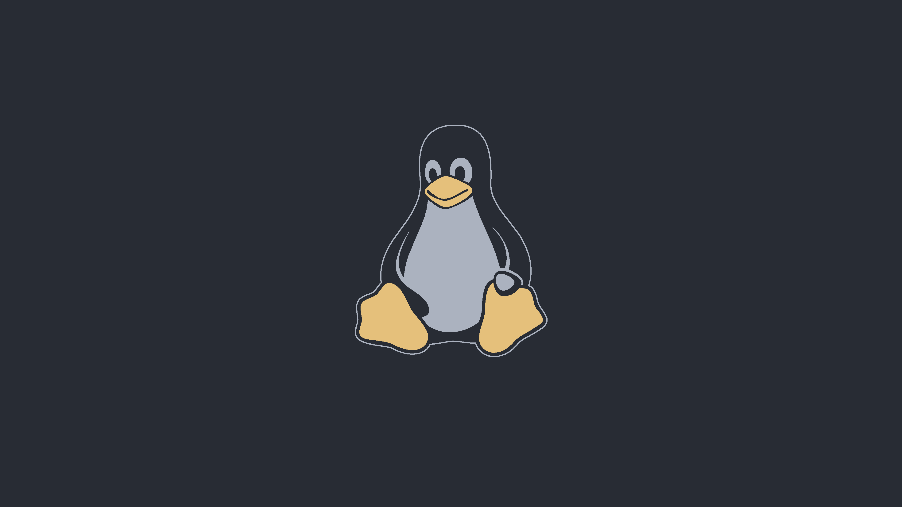

Title of the Article
This can be used as a framework for any new article. Just replace these body paragraphs from ARTICLE START to ARTICLE STOP with whatever you want and it should work out okay.
Then, update index.html with a new entry pointing to this file. It should be in the form ./articles/article-folder/article_text.html
Above, article-folder is the...folder of...the article. Then, uh... I mean you get it. I'd rather every article was just an html file and nothing else, but I'm not discounting the idea that I might add more fancy pants stuff like articles with images (like this Test Article, in fact). So, every article will have a folder, and in that folder will be (1) the article html file itself and (2) any images or whatever I'd need for the article.

This is a picture of Tux, the Linux penguin. He's a very cute little guy.This is just a test article. Hi there! If this is Ethan, then double hello, how's it going, dude. Hope your summer's going okay, yadda yadda. Basically, all my articles are just going to be in this format, so I can just copy and paste this .html file whenever I want to make a new page. Saves me some work. I should probably update this with an image just to get the totality of what this goddamn html-and-css-only-site might have.
# slackpkg update
# slackpkg install-new
# slackpkg upgrade-all
# slackpkg clean-system
int main() {
printf("Hello, World!\n");
return 0;
}
This is just a test article. Hi there! If this is Ethan, then double hello, how's it going, dude. Hope your summer's going okay, yadda yadda. Basically, all my articles are just going to be in this format, so I can just copy and paste this .html file whenever I want to make a new page. Saves me some work. I should probably update this with an image just to get the totality of what this goddamn html-and-css-only-site might have.
This is just a test article. Hi there! If this is Ethan, then double hello, how's it going, dude. Hope your summer's going okay, yadda yadda. Basically, all my articles are just going to be in this format, so I can just copy and paste this .html file whenever I want to make a new page. Saves me some work. I should probably update this with an image just to get the totality of what this goddamn html-and-css-only-site might have.